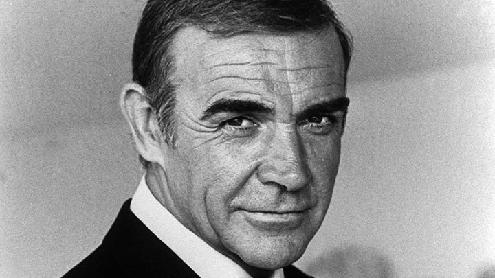
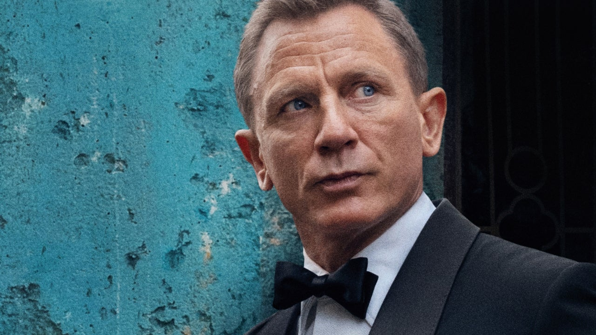

Sean Connery
He was the first actor to portray fictional British secret agent James Bond on film, starring in seven Bond films between 1962 and 1983. Originating the role in Dr. No, Connery played Bond in six of Eon Productions' entries and made his final appearance in Never Say Never Again.
კითხვის გაგრძელება
Pierce Brosnan
He is best known as the fifth actor to play secret agent James Bond in the Bond film series, starring in four films from 1995 to 2002. Brosnan first met James Bond film producer Albert R. Broccoli on the sets of For Your Eyes Only, as his first wife.
კითხვის გაგრძელება

Daniel Craig
Daniel Wroughton Craig is an English actor. He gained international fame playing the secret agent James Bond in the film series, beginning 2006 to 2021. After training at the National Youth Theatre in London and graduating from the Guildhall School of Music and Drama in 1991.
კითხვის გაგრძელება